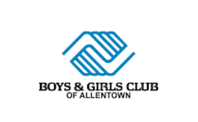
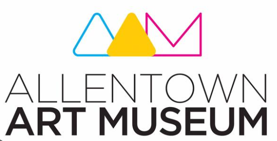
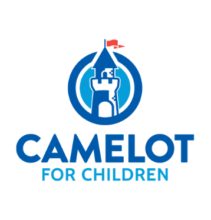

Here is a list of some of the local charites and specific details about each charity. Each section includes details about a single charity, this includes information such as a description of the charity, details about how an individual can help, and any upcoming events.
The goal of the Boys & Girls Club of Allentown is to create a safe and stable environment for the youth of Allentown. This organization provides a compelling alternative to youth crime, gang membership, drugs, and other negative influences. And they hope to teach members to develop friendships, build self esteem, contribute to society, and achieve personal success. They have multiple locations including Teen Center, Sixth Street Clubhouse, and Cumberland Gardens Clubhouse.
Some ways to help this organization is through donations and volunteering. You can volunteer online today, just make sure you have all your clearances before reaching out.
Hover over the events button to see upcoming events.
To visit the Boys & Girls Club of Allentown's website, please click this link.
The goal of the Allentown Art Museum is to share the beauty of art with the citizens of Allentown. They also work to bring community together by offering to organize and hold a variety of different events. The location for the art museum is 31 North Fifth Street Allentown, PA 18101.
Some ways to help this organization is through donations and volunteering. You can volunteer online today. Volunteers serve as docents, work in the Museum store, staff hands-on art stations at events, help with office paperwork, and assist the curatorial staff with researching, cataloging and prepping for new exhibits.
Hover over the events button to see upcoming events.
To visit the Allentown Art Museum's website, please click this link.
The goal of Camelot for Children is to providing year-round social and educational opportunities to children with disabilities and chronic or terminal illnesses in a supportive, developmentally appropriate, enriching environment in order to make the magic of childhood accessible to children with unique needs. They have a single location at 2354 W. Emmaus Avenue Allentown PA 18103.
Some ways to help this organization is through donations and volunteering. You can volunteer online today, just make sure you have all your clearances before reaching out.
Hover over the events button to see upcoming events.
To visit the Camelot for Children's website, please click this link.
